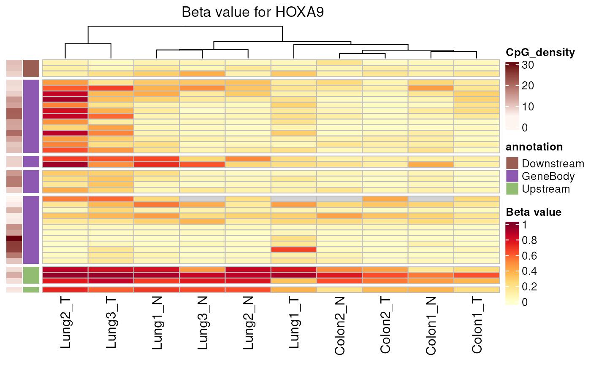
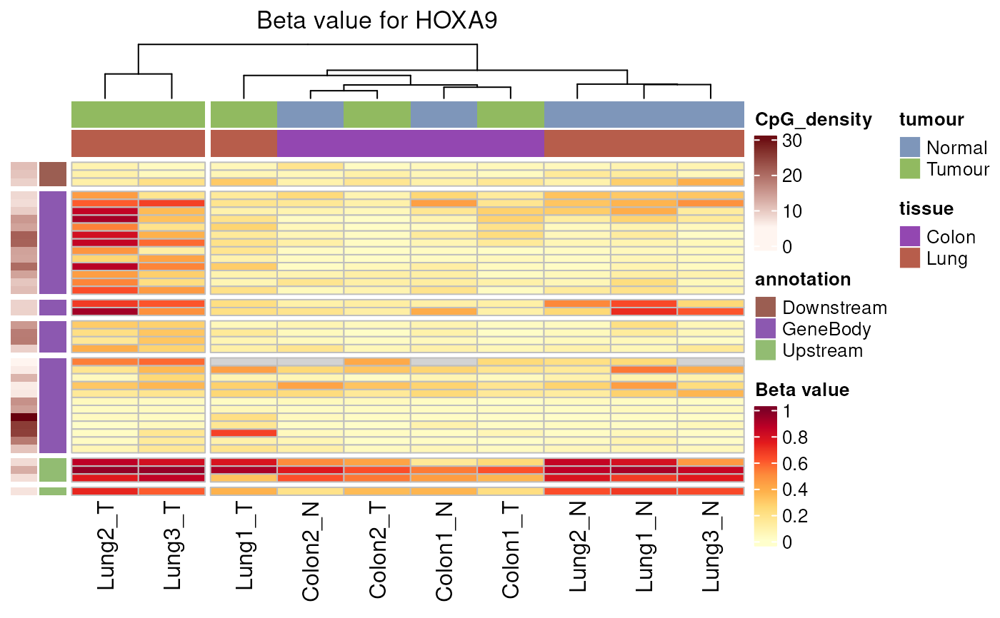

R/plotting.R
plotGeneHeatmap.RdPlot sample signal over windows spanning a gene (± flanks) as a heatmap using ComplexHeatmap. The gene can be given as a HGNC symbol or Ensembl ID.
plotGeneHeatmap(
qseaSet,
gene,
normMethod = "beta",
useGroupMeans = FALSE,
sampleAnnotation = NULL,
minDensity = 0,
minEnrichment = 3,
maxScale = 1,
clusterNum = NULL,
annotationColors = NA,
upstreamDist = 3000,
scaleRows = FALSE,
clusterCols = TRUE,
mart = NULL,
showSampleNames = NULL,
downstreamDist = 1000,
idType = NULL,
...
)qseaSet.
Input object containing windows and counts/betas.
character(1).
Gene identifier to plot (HGNC symbol like "HOXA9" or Ensembl ID like "ENSG000...").
character(1).
Which measure to plot. One of "beta" or "nrpm".
Default: "beta".
logical(1).
If TRUE, average samples by the group column in the sample table (combine replicates).
Default: FALSE.
tidyselect specification or character() or NULL.
Columns from the sample table to display as column annotations
(e.g., c("tumour","tissue") or bare helpers tumour, tissue).
Default: NULL.
numeric(1).
Minimum CpG_density required to keep a window.
Default: 0.
numeric(1).
For "beta", values with enrichment < minEnrichment are set to NA.
Default: 3.
numeric(1).
Upper limit of the colour scale (used for "nrpm"; not applied to "beta").
Default: 1.
integer(1) or NULL.
If set, cut the column dendrogram into this many clusters and display cluster labels.
Default: NULL.
list or NA.
Optional named colour maps for annotations, e.g.
list(tumour = c(Tumour = "firebrick4", Normal = "blue")).
Default: NA.
integer(1).
Number of base pairs upstream of the gene to include.
Default: 3000.
logical(1).
Whether to z-score scale rows (windows) before plotting.
Default: FALSE.
logical(1).
Whether to cluster columns (samples).
Default: TRUE.
biomaRt::Mart or NULL.
Ensembl mart used to resolve gene coordinates. If NULL, attempts to use a mart
stored on the qseaSet (see setMart()); otherwise falls back to a default for
GRCh38/hg38 or hg19.
Default: NULL.
logical(1) or NULL.
If NULL, names are shown when there are fewer than 50 samples; set TRUE/FALSE to force.
Default: NULL.
integer(1).
Number of base pairs downstream of the gene to include.
Default: 1000.
character(1) or NULL.
Column in the mart to match gene against (needed for non-human/mouse setups).
Default: NULL.
Additional arguments forwarded to ComplexHeatmap constructors.
Draws a heatmap on the active device and (invisibly) returns the underlying
ComplexHeatmap object (e.g., a Heatmap/HeatmapList) for further composition
with ComplexHeatmap::draw().
The function resolves the gene to genomic coordinates (using mart, or a mart
stored on the object, or a built-in default for human builds), expands the
interval by upstreamDist/downstreamDist, filters windows by overlap and
minDensity, then draws a heatmap of "beta" or "nrpm". For "beta", values
below minEnrichment are set to NA. If useGroupMeans = TRUE, samples are
aggregated by group prior to plotting. Column annotations can be added via
sampleAnnotation; colours can be customized via annotationColors.
data(exampleTumourNormal, package = "mesa")
# Basic gene heatmap (beta) with defaults
tryCatch(
exampleTumourNormal %>% plotGeneHeatmap("HOXA9"),
error = function(e) message("Ensembl unavailable: ", conditionMessage(e))
)
#> Found HOXA9 on chromosome 7, 27162438 - 27175180
#> Generating table of beta values for 38 regions across 10 samples.
#> No empty columns to remove.

# Add sample annotations (tidyselect bare names) and cluster columns into 2 groups
tryCatch(
exampleTumourNormal %>%
plotGeneHeatmap("HOXA9",
sampleAnnotation = c(tumour, tissue),
clusterNum = 2),
error = function(e) message("Ensembl unavailable: ", conditionMessage(e))
)
#> Found HOXA9 on chromosome 7, 27162438 - 27175180
#> Generating table of beta values for 38 regions across 10 samples.
#> No empty columns to remove.

# Custom colours and wider flanks
tryCatch(
exampleTumourNormal %>%
plotGeneHeatmap("HOXA9",
sampleAnnotation = tumour,
annotationColors = list(tumour = c(Tumour = "firebrick4", Normal = "blue")),
upstreamDist = 1000,
downstreamDist = 2000),
error = function(e) message("Ensembl unavailable: ", conditionMessage(e))
)
#> Found HOXA9 on chromosome 7, 27162438 - 27175180
#> Generating table of beta values for 41 regions across 10 samples.
#> No empty columns to remove.